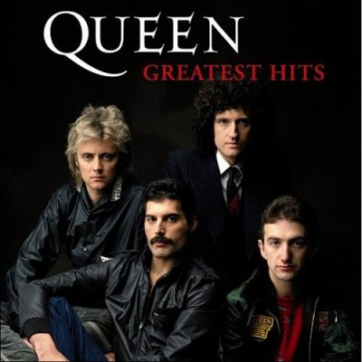

1970 годы
Queen
британская рок-группа, добившаяся широчайшей известности в середине 1970-х годов, и одна из наиболее успешных групп в истории рок-музыки. Средства массовой информации называют группу «культовой» и пишут, что она и по сей день имеет сотни миллионов поклонников.


Motörhead
британская хэви-метал-группа, оказавшая большое влияние на развитие всей тяжёлой музыки, в частности, на возникновение спид-метала, хотя отнести её музыку к этому стилю можно только с натяжкой. Музыку группы, скорее, можно охарактеризовать как сочетание хард-рока, панк-рока и прото-трэша.
Sex Pistols
британская панк-рок-группа, образованная в 1975 году в Лондоне. Коллектив стал олицетворением субкультуры панка, а его участники — инициаторами так называемой «панк-революции» в Великобритании